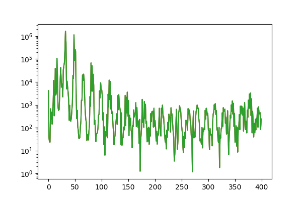

Getting Started
An MPI data file consists of a collection of parameters that can be divided into metadata and measurement data. Let us now consider that the string filename contains the path to an MPI file (e.g. an MDF file). Then be can open the file by calling
julia> f = MPIFile(filename)f can be considered to be a handle to the file. The file will be automatically be closed when f is garbage collected. The philosophy of MPIFiles.jl is that the content of the file is only loaded on demand. Hence, opening an MPI file is a cheap operations. This design allows it, to handle system matrices, which are larger than the main memory of the computer.
Using the file handle it is possible now to read out different metadata. For instance we can determine the number of frames measured:
julia> acqNumFrames(f)
500Or we can access the drive field strength
julia> dfStrength(f)
1×3×1 Array{Float64,3}:
[:, :, 1] =
0.014 0.014 0.0Now let us load some measurement data. This can be done by calling
u = getMeasurementsFD(f, frames=1:100, numAverages=100)Then we can display the data using the PyPlot package
using PyPlot
figure(6, figsize=(6,4))
semilogy(abs.(u[1:400,1,1,1]))
This shows a typical spectrum for a 2D Lissajous sampling pattern. The getMeasurementsFD is a high level interface for loading MPI data, which has several parameters that allow to customize the loading process. Details on loading measurement data are outlined in Measurements.
In the following we will first discuss the low level interface.